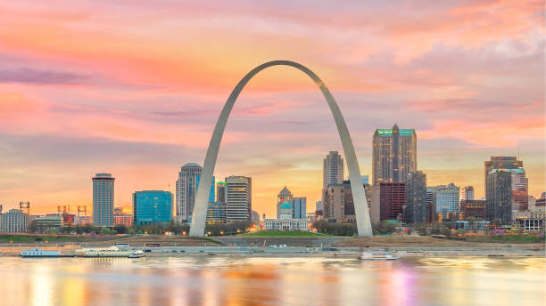
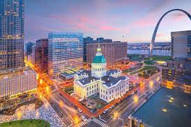

Yellowstone


Geographical Location: North America
Yellowstone is the first national park in the United States. It covers over 2.2 million acres, and provides an opportunity to see wildlife and explore geothermal areas. In fact, Yellowstone contains about half the world's active geysers.
These unique opportunities also bring out a lot of bad decisions among the tourists. Every year visitors injure themselves or the wildlife by getting close to the animals. You can see examples of people making bad decisions by visiting Yellowstone National Park: Invasion of the Idiots, Tourons of Yellowstone, or Cowboy State Daily.
Photo Gallery
New York


Geographical Location: NYC, NY, United States, North America
New York City thrives as a vibrant tapestry of cultures, languages, and experiences. Its streets pulse with energy, reflecting the city's boundless diversity. From the rhythmic beats of street performers in Times Square to the aroma of diverse cuisines wafting through neighborhoods, NYC's lively atmosphere encapsulates a living, breathing microcosm of the world.
From the iconic skyline to the bustling streets, it's a place where dreams are both pursued and realized. The city's fast-paced lifestyle is balanced by its diverse communities, offering a unique blend of cultures, cuisines, and experiences around every corner. Amid the hustle and bustle, there's a sense of constant motion and an electrifying energy that makes life in the Big Apple truly extraordinary.
Photo Gallery


St. Louis
 Geographical Location: North America
Nestled along the banks of the Mississippi River, St. Louis is a city brimming with history, culture, and culinary delights. The iconic Gateway Arch, towering above the skyline, symbolizes the city's pivotal role in westward expansion. Visitors can explore its rich history through the many museums and historical sites, such as the Missouri History Museum and the historic Old Courthouse.
St. Louis is also celebrated for its diverse cuisine, from mouthwatering barbecue joints to the unique local specialty of toasted ravioli. With its mix of tradition and innovation, St. Louis offers a dynamic and engaging experience for residents and tourists alike. The city's rich music scene, featuring jazz, blues, and rock, adds to its cultural tapestry, while its welcoming communities make it a place that feels like home to many.